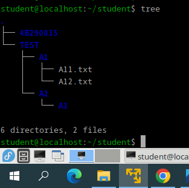
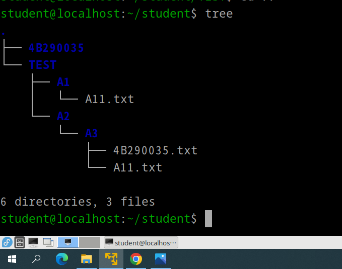
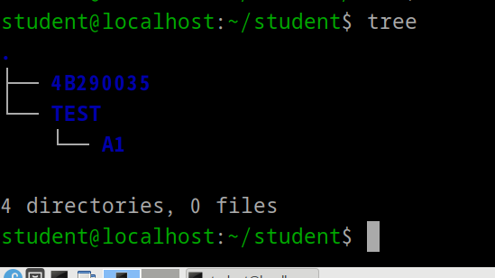

左邊是溫水佳樹聽到你的NOS成績時的表情
左邊是溫水佳樹聽到你的NOS成績時的表情1.先使用cd指令進入至"~/home/student"資料夾
2.使用"mkdir"指令創建"TEST"資料夾
3.使用cd指令進入該資料夾
4.使用"mkdir"指令創建"A1"、"A2"兩個資料夾
5.使用cd指令進入"A2"資料夾
6.在"A2"資料夾中使用"mkdir"指令創建"A3"資料夾
7.使用"cd ../A1"指令進入"A1"資料夾
8.使用"vi"指令創建"A11.txt"、"A12.txt"兩個檔案
以下為使用"tree"指令所示範的結果

1.透過"cp"指令將"A11.txt"複製至"A3"
2..透過"cp"指令將"A12.txt"複製至"A3"
3.將"A3"資料夾中的"A12.txt"更名為"學號.txt"
以下為使用"tree"指令所示範的結果

1.刪除所有"A11.txt"檔案
2.刪除"A2"資料夾及其以下所有內容
以下為使用"tree"指令所示範的結果
